LW = 'Linewidth'; MS = 'Markersize'; FS = 'Fontsize';
16.1 Introduction
Diskfun is a new part of Chebfun designed for computing with 2D scalar and vector-valued functions defined on the unit disk. Conceptually, it is an extension of Chebfun2 to the polar setting, designed to accurately and efficiently perform over 100 operations with functions on the disk, including differentiation, integration, vector calculus, and rootfinding, among many other things. Diskfun was developed in tandem with Spherefun, and the two are algorithmically closely related [2,3].
To get started, we simply call the Diskfun constructor. In this example, we consider a Gaussian function.
g = diskfun(@(x,y) exp(-10*((x-.3).^2+y.^2))); plot(g) view(3)
When working with functions on the disk, it is sometimes convenient to express them in terms of polar coordinates: Given a function $f(x,y)$ expressed in Cartesian coordinates, we apply the following transformation of variables: \begin{equation} x = \rho\cos\theta, \qquad y=\rho\sin\theta. \end{equation} This finds $f(\theta, \rho)$, where $\theta$ is the {\em angular} variable and $\rho$ is the {\em radial} variable.
To construct $g$ using polar coordinates, we include the flag 'polar'. The result using either coordinate system is the same up to essentially machine precision:
f = diskfun(@(t, r) exp(-10*((r.*cos(t)-.3).^2+(r.*sin(t)).^2)), 'polar'); norm(f-g)
ans =
0
The object we have constructed is called a diskfun, with a lower case ``D". We can find out more about a diskfun by printing it to the command line.
f
f =
diskfun object
domain rank vertical scale
unit disk 19 1
The output describes the {\em numerical rank} of $f$ (discussed below), as well an approximate maximum absolute value of $f$ (the vertical scale).
To evaluate a diskfun, we can use either polar or Cartesian coordinates. (To evaluate in polar coordinates, we need to include the 'polar' flag.)
[ f(sqrt(2)/4, sqrt(2)/4) f(pi/4,1/2, 'polar') ]
ans = 0.278404647671088 0.278404647671088
We can also evaluate a univariate ``slice" of $f$, either radial or angular. The result is returned as a chebfun, either a nonperiodic or periodic function, respectively. Here, we plot three angular slices at the fixed radii $\rho = 1/4$, $1/3$, and $1/2$.
c = f( : , [1/4 1/3 1/2] , 'polar'); plot(c(:,1), 'r', c(:,2), 'k', c(:,3), 'b') title( 'Three angular slices of a diskfun' )
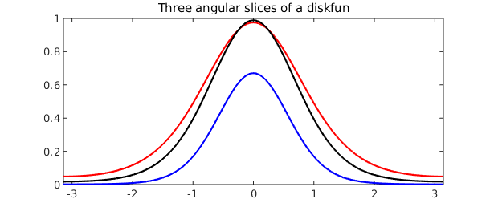
Where ever possible, we interpret commands with respect to the function in Cartesian coordinates. So, for example, the command diag returns the radial slice $f(x,x)$ as a nonperiodic chebfun, and trace is the integral of $f(x,x)$ over its domain.
d = diag( f ); plot( d ) title( 'The diagonal slice of f' ), snapnow trace_f = trace( f ) % The trace is the integral of f(x,x) over its domain sum( d )
trace_f = 0.357313890819409 ans = 0.357313890819409

Just like the rest of Chebfun, Diskfun is designed to perform operations at essentially machine precision, and using Diskfun requires no special knowledge about the underlying algorithms or discretization procedures. Those interested in such details can find an in-depth description of how Diskfun works in [3].
16.2 Basic operations
A suite of commands are available in Diskfun, and here we describe only a few. A complete listing can be found by typing methods diskfun in the MATLAB command line.
We start by adding, subtracting, and multiplying diskfuns together:
g = diskfun(@(th, r) -40*(cos(((sin(pi*r).*cos(th)...
+ sin(2*pi*r).*sin(th)))/4))+39.5, 'polar');
f = diskfun( @(x,y) cos(15*((x-.2).^2+(y-.2).^2))...
.*exp(-((x-.2)).^2-((y-.2)).^2));
plot( g )
title( 'g' )
axis off
snapnow
plot( f )
title( 'f' )
axis off
snapnow
h = g + f;
plot(h)
title( 'g + f' )
axis off
snapnow
h = g - f;
plot( h )
title( 'g - f' )
axis off
snapnow
h = g.*f;
plot( h )
title( 'g x f' )
axis off

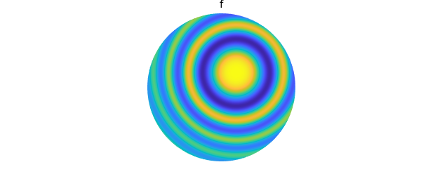
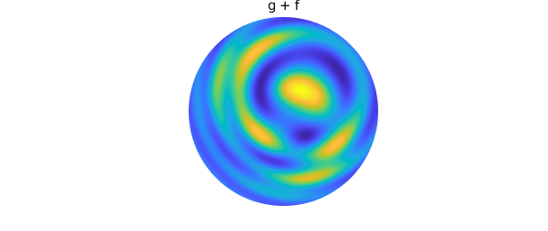

In addition to algebraic operations, we can also solve unconstrained global optimzation problems. In this example, we use the command max2 to plot $f$ along with its maximum value.
[val, loc] = max2( f ) plot( f ), hold on axis off colorbar plot3(loc(1), loc(2), val, 'k.', MS, 30); hold off
val = 0.999999999999999 loc = 0.200000001898924 0.199999978106873
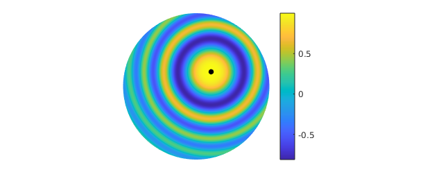
There are many ways to visualize a function on the disk and Diskfun offers several options. For example, here is a contour plot of $g$, with the zero contours displayed as black lines:
contour(g, 'Linewidth', 1.2), hold on axis off contour(g, [0 0], '-k', 'Linewidth', 2) hold off
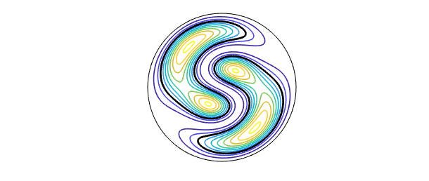
The roots of a function (1D contours) can also be found explicitly and computed with as functions. The contours are stored as a cell array of chebfuns. Each cell consists of two chebfuns that parametrize the contour.
r = roots(g);
plot(g), hold on
for j = 1:length(r)
rj = r{j};
plot(r{j}(:,1), r{j}(:,2), '-k', LW, 3)
end
colorbar
axis off
hold off
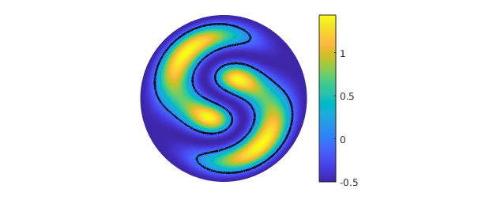
One can also perform calculus on diskfuns. For instance, the integral of the function $g(x,y) = -x^2 - 3xy-(y-1)^2$ over the unit disk can be computed using the sum2 command. We know that the exact answer is $-3\pi/2$.
f = diskfun(@(x,y) -x.^2 - 3*x.*y-(y-1).^2) sum2(f) -3*pi/2
f =
diskfun object
domain rank vertical scale
unit disk 3 4.8
ans =
-4.712388980384691
ans =
-4.712388980384690
Differentiation on the disk with respect to the polar variable $\rho$ can lead to singularities, even for smooth functions. For example, the function $f( \theta, \rho) = \rho^2$ is smooth on the disk, but $\partial f/ \partial \rho = 2 \rho$ is not smooth. For this reason, differentiation in Diskfun is only done with respect to the Cartesian coordinates, $x$ and $y$.
Here, we examine a harmonic conjugate pair of functions, $u$ and $v$. We can use Diskfun to check that they satisfy the Cauchy-Riemann equations. Geometrically, this implies that the contour lines of $u$ and $v$ intersect orthogonally.
u = diskfun(@(x,y) exp(x).*sin(y)); v = diskfun(@(x,y) -exp(x).*cos(y)); dyu = diffy(u); % u_y dxv = diffx(v); % u_x norm(dyu+dxv) % Check u_y =- v_x norm(diffx(u) - diffy(v)) % Check u_x = v_y contour(u, 30, 'b'), hold on contour(v, 30, 'm') axis off hold off title( 'Contour lines for u and v' ) snapnow
ans =
2.439203671004054e-08
ans =
3.492797567907611e-09
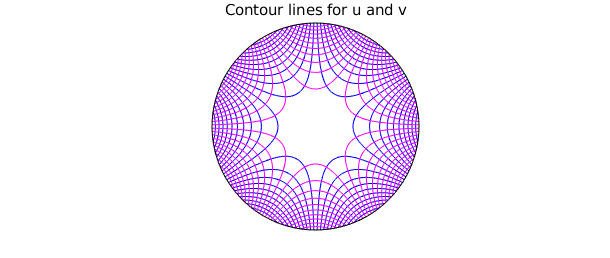
In the next example, we compute the derivatives of a function involving the Bessel function.
f = diskfun(@(x,y) besselj(0, 5*y).*besselj(0, 5*(x-.1)).*exp(-x.^2-y.^2)); plot( f ) axis off snapnow title( 'f' ) plot( diffx( f ) ) axis off title( 'derivative of f with respect to x' ) snapnow plot( diffy( f ) ) axis off title( 'derivative of f with respect to y' ) snapnow plot( laplacian( f ) ) axis off title( 'Scalar laplacian of f' ) snapnow
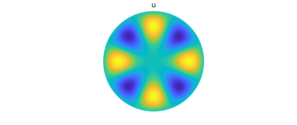
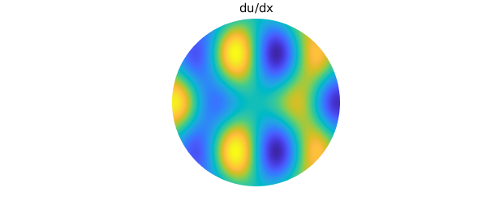
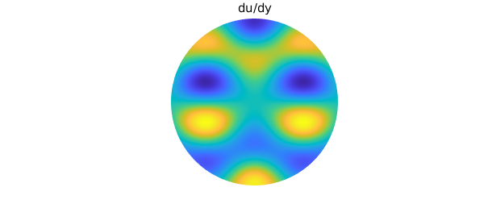

16.3 Poisson's equation
We can use Diskfun to compute solutions to Poisson's equation on the disk. In this example, we compute the solution $v(\theta, \rho)$ for Poisson's equation with a Dirichlet boundary condition, so that $$ \Nabla^2 v = f, \qquad f(\theta, 1) = 1. $$ Here, $(\theta, \rho) \in [-\pi, \pi] \times [0, 1]$ and $f = \sin \left( 21 \pi \left( 1 + \cos( \pi \rho) \right) \rho^2-2\rho^5\cos \left( 5(t-.11)\right) \right)$. The solution is returned as a diskfun, so we can immediately plot it, evaluate it, find its zero contours, or perform other operations.
f = @(t,r) sin(21*pi*(1+cos(pi*r)).*(r.^2-2*r.^5.*cos(5*(t-0.11)))); rhs = diskfun(f, 'polar'); % Right-hand side bc = @(t) 0*t+1; % Boundary condition v = diskfun.poisson(f, bc, 512) % Solve for u for 512 x 512 dof plot( rhs ) axis off title( 'f' ), snapnow plot( v ) axis off title( 'v' ), snapnow
v =
diskfun object
domain rank vertical scale
unit disk 20 1
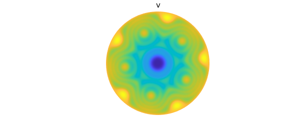
16.4 Vector calculus
Since the introduction of Chebfun2, Chebfun has supported computation with vector-valued functions, including functions in $2D$ (Chebfun2v), $3D$ (Chebfun3v), and spherical geometries (Spherefunv). Similarly, Diskfunv allows one to compute with vector-valued functions on the disk. Currently, there are dozens commands available in Diskfunv, including vector-based algebraic commands such as cross and dot, as well as commands that map vector-valued functions to scalar-valued functions (e.g., curl, div and jacobian) and vice-versa (e.g., grad), and commands for performing calculus with vector fields (e.g., laplacian).
To get started, we create a diskfun representing a function $f = \psi + \phi$, and then compute its gradient. The result is returned as a vector-valued object called a diskfunv, with a lower case ``D".
psi = @(x,y) 10*exp(-10*(x+.3).^2-10*(y+.5).^2)+10*...
exp(-10*(x+.3).^2-10*(y-.5).^2)+ 10*(1-x.^2-y.^2)-20;
phi = @(x,y) 10*exp(-10*(x-.6).^2-10*(y).^2);
f = diskfun( psi ) + diskfun( phi );
u = grad( f )
u =
diskfunv object containing
diskfun object
domain rank vertical scale
unit disk 25 44
diskfun object
domain rank vertical scale
unit disk 25 42
The vector-valued function $\mathbf{u}$ consists of two components, ordered with respect to unit vectors in the directions of $x$ and $y$, respectively. Each of these is stored as a diskfun. The Cartesian coordinate system is used because this ensures that each component is a smooth function on the disk. The unit vectors in the polar and radial directions are discontinuous at the origin of the disk, and working with them can lead to singularities. We can view the vector field using a quiver plot:
plot(f) hold on quiver(u, 'k') axis off hold off

Once a diskfunv object is created, we have overloaded dozens of commands to compute with them. For example, here is a contour plot of the divergence for $\mathbf{u}$.
D = div( u ); contour(D, 'Linewidth', 1.5), hold on quiver(u, 'k') axis off hold off

Since $\mathbf{u}$ is the gradient of $f$, we can verify that $\Nabla \cdot \mathbf{u} = \Nabla^2 f$:
norm( div(u) - lap(f) )
ans =
0
Additionally, since $\mathbf{u}$ is a gradient field, \Nabla \cross \mathbf{u} = 0$. We can verify this with the |curl| command.
v = curl(u); norm( v )
ans =
1.238634213917318e-10
Diskfunv objects can be created through calling the constructor directly with function handles or diskfuns input for each component, or by vertically concatenating two diskfuns. Here, we demonstrate this by forming a diskfunv $\mathbf{v}$ that represents the numerical surface curl for a scalar-valued function $g$, i.e, $\Nabla \times [0, 0, g]$.
g = diskfun( @(x,y) cosh(.25.*(cos(5*x)+sin(4*y.^2)))-2 ); dgx = diffx( g ); dgy = diffy( g ); v = diskfunv(dgy, -dgx); % call constructor norm(v - [dgy; -dgx]) % equivalent to vertical concatenation plot( g ), hold on quiver(v, 'w') axis off title( 'The numerical surface curl of g' ) hold off
ans =
0
This construction is equivalent to using the command curl on the scalar function $g$:
norm( v - curl(g) )
ans =
0
To see all the available commands in the vector part of Diskfun, type methods diskfunv in the MATLAB command line.
16.5 Constructing a diskfun
The above sections describe how to use Diskfun, and this section provides a brief overview of how the algorithms in Diskfun work. This can be useful for understanding various aspects of approximation involving functions on the disk. More details can be found in [3], and also in the closely related Spherefun chapter (Chapter 17) of the guide.
Like Chebfun2 and Spherefun, Diskfun uses a variant of Gaussian elimination (GE) to form low rank approximations to functions. This often results in a compressed representation of the function, and it also facilitates the use of highly efficient algorithms that work primarily on 1D functions.
To construct a diskfun from a function $f$, we consider an extended version of $f$, denoted by $\tilde{f}$, which is formed by taking $f(\theta, \rho)$ and letting $\rho$ range over $[-1, 1]$, as opposed to $[0, 1]$. This is the disk analogue to the so-called double Fourier sphere method discussed in Chapter 17. Also, see [1,4]. The function $\tilde{f}$ has a special structure, referred to as a block-mirror-centrosymmetric (BMC) structure. By forming approximants that preserve the BMC structure of $\tilde{f}$, smoothness near the origin is guaranteed. To see the BMC structure, we construct a diskfun |f| and use the |pol2cart| command:
f= @(x,y) sech((cos(2*((2*x).^2+(2*y).^2))+sin(2*y)));
f = diskfun(f);
tf = cart2pol(f, 'cdr')
plot(tf)
view(2)
title('The BMC function associated with f')
tf =
chebfun2 object
domain rank corner values
[-3.1, 3.1] x [ -1, 1] 33 [0.99 0.99 0.99 0.99]
vertical scale = 1
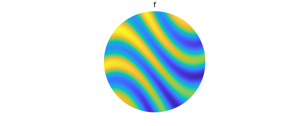
A structure-preserving method of GE (see [3]) adaptively selects a collection of 1D circular and radial ``slices" that are used to approximate $\tilde{f}$. Each circular slice is a periodic function in $\theta$, and is represented by a trigonometric interpolant (or trigfun, see Chapter 11). Each radial slice, a function in $\rho$, is represented as a chebfun. These slices form a low rank representation of $f$, \begin{equation} \label{eq:lra} f(\theta, \rho) \approx \sum_{j=1}^{n} d_jc_j(\rho)r_j(theta), \end{equation} where ${d_j}_{j=1}^{n}$ are pivot values associated with the GE procedure.
The |plot| command can be used to display the ``skeleton" of |f|: the locations of the slices that were adaptively selected and sampled during the GE procedure. Comparing the skeleton of |f| to the tensor product grid required to approximate $\tilde{f}$ to machine precision, we see that $\tilde{f}$ is numerically of low rank, so Diskfun is effectively compressing the representation. The clustering of sample points near the center and the edges of the disk can be observed in the tensor product grid; low rank methods alleviate this issue in many instances.
clf
plot(f, '.-', MS, 20)
axis off
title('low rank function samples', FS, 16), snapnow
[ m, n ] = length(f);
r = chebpts(m);
r = r((m+1)/2: m);
[ tt, rr ] = meshgrid( linspace(-pi, pi, n), r );
XX = rr.*cos(tt);
YY = rr.*sin(tt);
clf, plot(XX, YY, 'k-', LW, 0.1)
hold on
plot(XX', YY', 'k-', LW, 0.1)
view(2), axis square, axis off
title('Tensor product function samples', FS, 16)
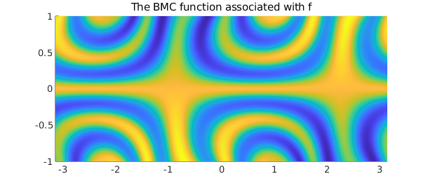
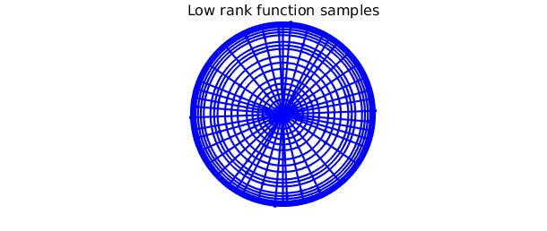
Writing the approximant as in~\eqref{eq:lra} allows us to work with it as
a continuous analogue of a matrix factorization. The
the column" (radial) slices of $f$ are the collection of Chebyshev
interpolants $\{ c_j(\rho)\}_{j=1}^n$, and therows" of $f$ are the
trigonometric interpolants ${ r_j(\theta)}$. These can be plotted;
doing so we observe that each column is either even or odd, and each row
is either $\pi$-periodic or $\pi$-antiperiodic. This is reflective of the
inherent BMC structure of the approximant.
clf
plot(f.cols(:,2:10))
title('8 of the 33 column slices of f')
snapnow
plot(f.rows(:,5:10))
title('5 of the 33 row slices of f')
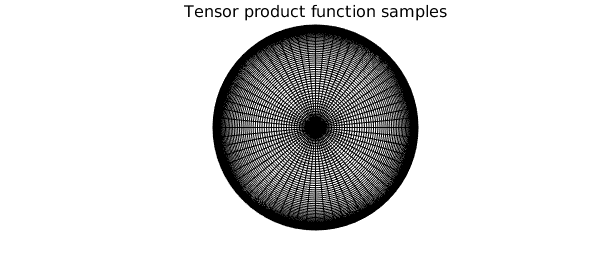

In practice, several basis choices can be used for approximation on the disk (see [Boyd, Yu 2011]). Diskfun uses the Chebyshev--Fourier basis, and f is fully characterized by its Chebyshev and Fourier coefficients. The command plotcoeffs lets us inspect these details.
plotcoeffs(f)

The Fourier-Chebyshev coefficients are retrieved using the coeffs2 command. A coefficient matrix can also be used to construct a diskfun.
C = coeffs2(f); g = diskfun(C, 'coeffs'); norm(g-f);
References
[Boyd, Yu 2011] Boyd, John P., and Fu Yu, Comparing seven spectral methods for interpolation and for solving the Poisson equation in a disk: Zernike polynomials, Logan–Shepp ridge polynomials, Chebyshev–Fourier series, cylindrical Robert functions, Bessel–Fourier expansions, square-to-disk conformal mapping and radial basis functions, J. Comp. Physics, 230.4 (2011), pp. 1408-1438.
[Fornberg 1998] B. Fornberg, A Practical Guide to Pseudospectral Methods, Cambridge University Press, 1998.
[Townsend, Wilber & Wright, 2016A] A. Townsend, H. Wilber, and G.B. Wright, Computing with functions in spherical and polar geometries I. The sphere, SISC, to appear, (2016).
[Townsend, Wilber & Wright, 2016B] A. Townsend, H. Wilber, and G.B. Wright, Computing with functions in spherical and polar geometries II. The disk, submitted, (2016).
[Trefethen 2000] L. N. Trefethen, Spectral methods in MATLAB, SIAM, 2000.